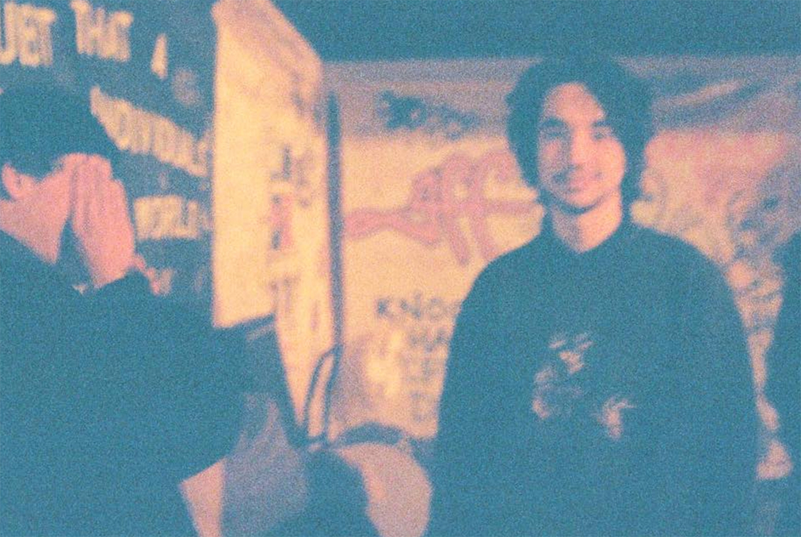

Solo Works

Attempts to leave artifacts of particular mental states.
Dusk
Dusk is a music composition performed at the International Computer Music Conference 2019 and the New York City Electroacoustic Music Festival. A stereo piece using field recordings and granulation techniques. It has been officially released under the 20.8(3) microseconds release, "By the Broken Barn".
reductions_0.4-1007081019
0.1 - FurtherEdits
20.8(3) microseconds
Collaborative audio project with Alex Meinhof. We focus on building narrative and emotions out of the environments we stumble upon. Largely inspired by walking. Photo credits to Erick Martinez.
By The Broken Barn (2020)
The composition ”By the Broken Barn” was accepted to the International Computer Music Conference 2020 in Santiago, Chile. Note that this has been postponed till 2021 due to COVID-19.